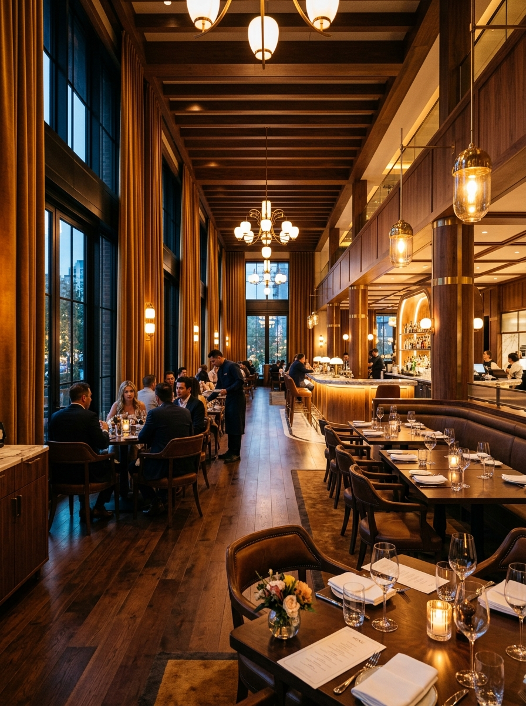
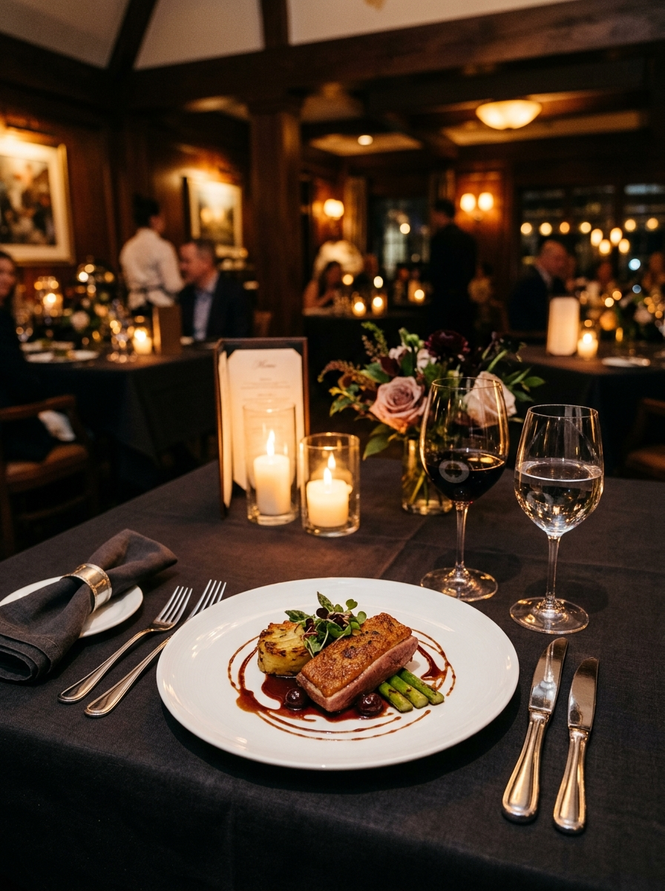
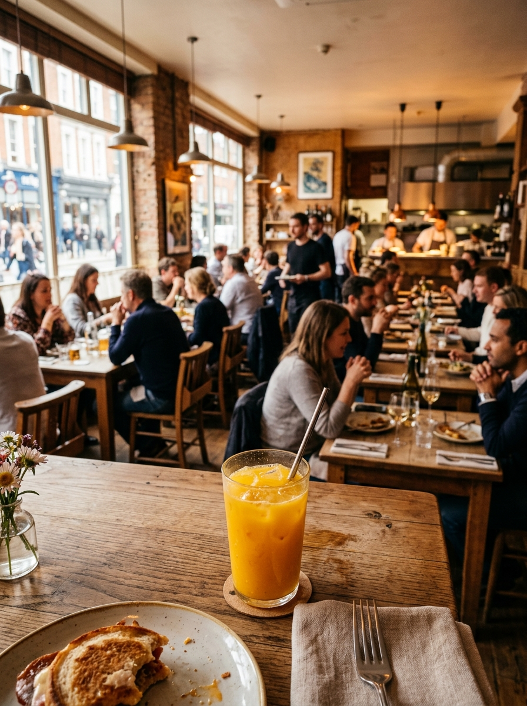

স্বাদের প্রতি শ্রদ্ধা
পরিচিত স্বাদকে সযত্নে তৈরি করে প্রতিটি প্লেটে ভারসাম্য আনার চেষ্টা করি।

OUR STORY
ফরিদপুরে পরিবার ও বন্ধুদের নিয়ে সময় কাটানোর জন্য একটি আন্তরিক ডাইনিং অভিজ্ঞতা।
WELCOME TO TERRACOTTA
Terracotta Restaurant নিজেকে শুধু খাবারের জায়গা হিসেবে দেখে না। আমরা এমন একটি পরিবেশ তৈরি করতে চাই যেখানে দিনের ক্লান্তি শেষে পরিবার ও বন্ধুরা স্বস্তিতে বসতে পারেন, গল্প করতে পারেন এবং যত্নে তৈরি খাবারের স্বাদ নিতে পারেন।
আমাদের প্রকাশিত পরিচিতিতেই যেমন বলা আছে—এটি ফরিদপুরের প্রথম ব্যাপক পরিসরের রেস্টুরেন্ট। সেই দায়িত্ববোধ থেকেই প্রতিটি টেবিল, প্রতিটি পরিবেশন ও প্রতিটি অতিথির অভিজ্ঞতায় আমরা মনোযোগ দিই।

WHAT GUIDES US
পরিচিত স্বাদকে সযত্নে তৈরি করে প্রতিটি প্লেটে ভারসাম্য আনার চেষ্টা করি।
আপনার আগমন থেকে বিদায় পর্যন্ত সহজ, উষ্ণ ও সম্মানজনক অভিজ্ঞতাই আমাদের লক্ষ্য।
দুজনের শান্ত ডিনার থেকে বড় পারিবারিক আয়োজন—প্রতিটি উপলক্ষই আমাদের কাছে গুরুত্বপূর্ণ।
AT THE TABLE
দ্রুত দুপুরের লাঞ্চ, কর্মব্যস্ত দিনের বিরতি, জন্মদিনের খাবার কিংবা অনেক দিন পর বন্ধুদের সঙ্গে দেখা—প্রতিটি মুহূর্তের জন্যই Terracotta-তে একটি জায়গা আছে। আপনার পরিকল্পনা জানান, আমরা আপনাকে সঠিক টেবিলের প্রস্তুতিতে সহায়তা করব।
টেবিল বুক করুন ↗